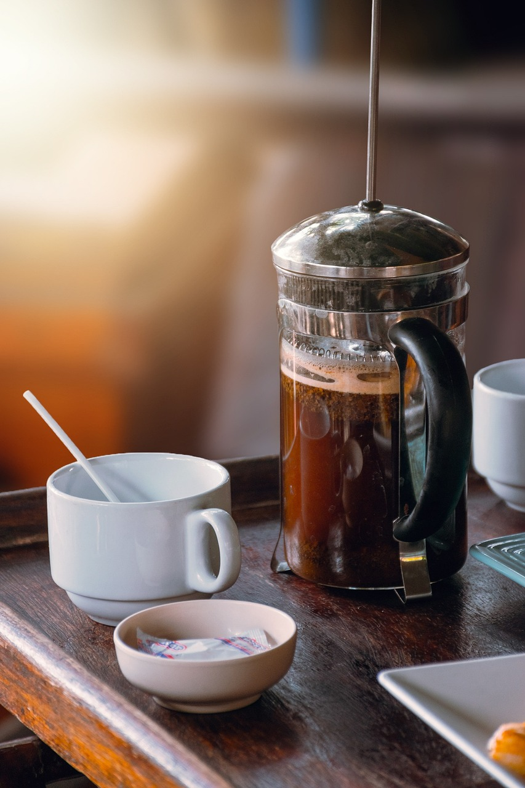

French Press Coffee

Description
French press coffee is a type of brewed coffee made with an immersion of coarsely ground coffee beans in hot water. It requires a french press, a brewing device commonly available at most groceries, home goods stores, and cafes.
This coffee is simple to make, yet challenging to perfect. The amount of coffee grounds and length of brew and all affect the brew's final flavor and consistency. Finding your preferred method is part of the fun! Let's take a look at a basic recipe...
Ingredients
- French press
- Whole bean or coarse ground coffee (1 oz grind per 1 cup water)
- Water (tap or filtered)
- Spoon or stir-stick
- Carafe, thermos, cup or mug
Steps
- Heat desired cups water to 200 degrees F. Heat about 1 cup more water than the capacity of your french press.
- For every cup you wish to brew, grind 1 oz coffee beans on coarse setting.
- With the lid removed, pour the ground coffee into your french press beaker, then slowly pour in heated water, covering the grounds as you pour, until you reach beaker capacity or desired volume.
- Wait four minutes, then break the top "crust" and stir uniformly. Place press lid into position on top of beaker and slowly depress the plunger until coffee grounds are compressed at the bottom of the beaker. (WARNING! Do not depress too fast or with too much force to avoid breaking the glass beaker.
- Hold the lid in place and pour the pressed coffee into a carafe, thermos, or your favorite coffee mug.
- Enjoy!
Optional:
- Experiment with the amount of coffee grounds or other steeping times, like three to four to five to eight minutes.
- Preheat your vessel(s) to avoid heat loss. Boil extra water and add it to your carafe or drinking cups while you brew. When the coffee is ready to pour, discard the preheating water.
- Use a pour-over funnel and filter to strain fines out of the pressed coffee. First, place the funnel over your desired vessel, then insert the filter into the funnel. Wet the filter evenly with hot water. Discard the water captured by the vessel, replace the funnel, then pour the pressed coffee over the filter and funnel. The filter will extract excess fines and oils from the brewed coffee.